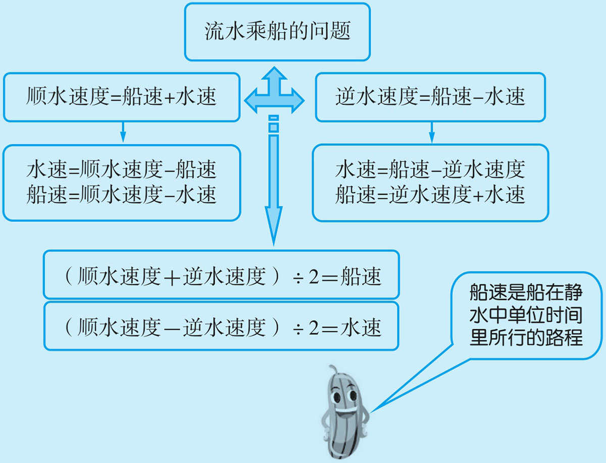
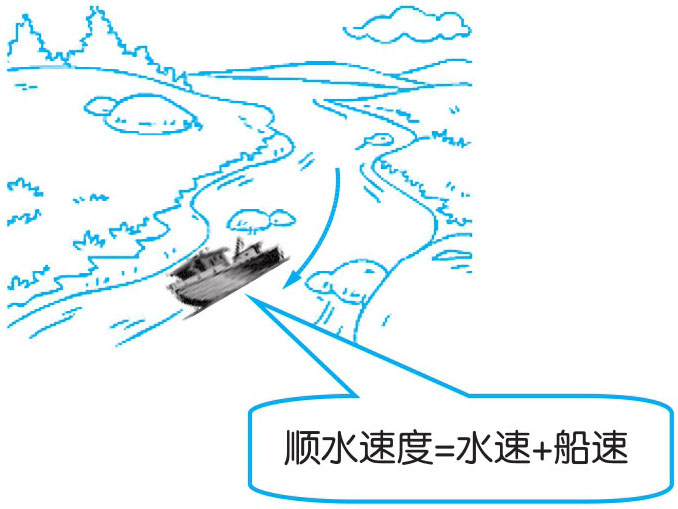
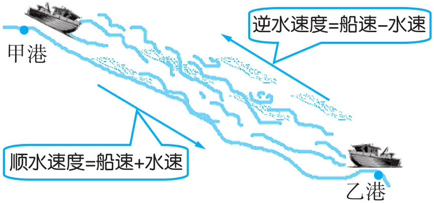
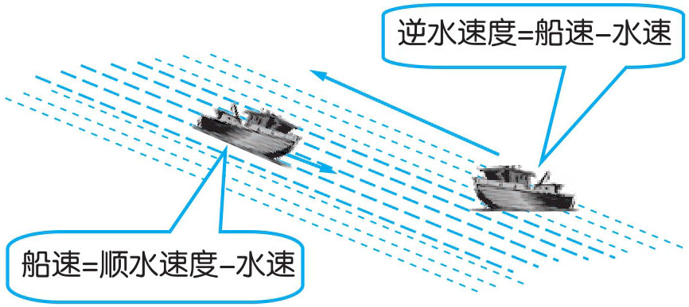
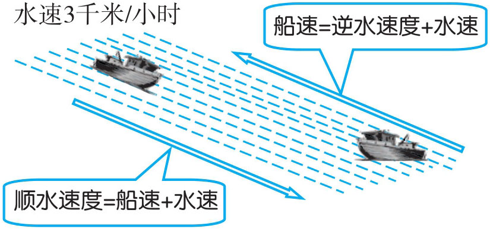
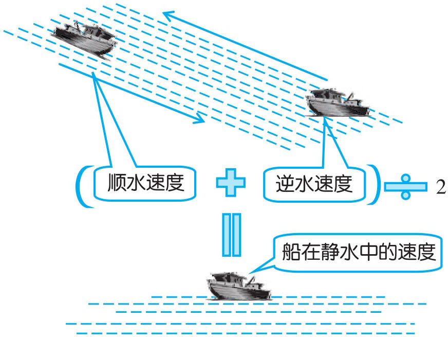

流水乘船问题是研究船在流水中的行程问题，因此，又叫行船问题。这类问题主要是找准三个关键量：船在静水中的速度、船的实际速度和水速。流水乘船问题的基本数量关系有：

例1 一只渔船顺水行20千米，用了4小时，水流的速度是每小时1.5千米。此船在静水中的速度是多少？
渔船顺水4小时行了20千米，则渔船的顺水速度为20÷4=5（千米／时）。顺水速度是船在静水中的速度与水流的速度的和，因此，船在静水中的速度为5-1.5=3.5（千米／时）。

20÷4-1.5=5-1.5=3.5（千米／时）
答：此船在静水中的速度为3.5千米／时。
例2 一艘游船在静水中的速度是每小时12千米，它从上游甲港开往乙港共用6小时。已知水速为每小时3千米。此船从乙港返回甲港需要多少小时？
游船在静水中的速度是每小时12千米，水速为每小时3千米，由此可知，游船在流水中的速度为每小时12+3=15（千米）。从甲港到乙港的距离为15×6=90（千米）。当从乙港返回甲港时，是逆水行船，它的速度为每小时12-3=9（千米）。因此，返回的时间为90÷9=10（小时）。

(12+3)×6÷(12-3)=90÷9=10（小时）
答：此船从乙港返回甲港需要10小时。
例3 一条大河，河中间（主航道）的水流速度是每小时10千米，沿岸边的水流速度是每小时8千米。一只船在河中间顺流而下，5.5小时行驶220千米。求：这只船沿岸边返回原地需要多少小时？
由船在河流的中间5.5小时行驶220千米，可推出，船在中间的顺水速度为每小时220÷5.5=40（千米），静水中的船速为每小时40-10=30（千米）。当它沿岸边返回时，逆水速度为30-8=22（千米）。因此，返回原地所用时间为220÷22=10（小时）。

船在静水中的速度：220÷5.5-10=30（千米／小时）
船沿岸边逆水而行的速度：30-8=22（千米／小时）
船沿岸边返回原地需要的时间：220÷22=10（小时）
答：船沿岸边返回原地需要10小时。
例4 一只船在水流速度是每小时3千米的水中航行，逆水行48千米用8小时。顺水行48千米需要多少小时？
船逆水行48千米用8小时，则逆水速度为每小时48÷8=6（千米）。那么船在静水中的速度（船速）就为每小时6+3=9（千米），在顺水中的速度就为每小时9+3=12（千米）。所以，顺水行48千米需要48÷12=4（小时）。

48÷(48÷8+3+3)=48÷12=4（小时）
答：顺水行48千米需要4小时。
例5 一只轮船从甲港开往乙港，顺水用6小时，又从乙港开往甲港，逆水用11小时。甲、乙两港相距264千米。求船在静水中的速度及水流的速度。
通过两港的距离与所用的时间，可以求出顺水速度为264÷6=44（千米／时），逆水速度为264÷11=24（千米／时）。由船速=（顺水速度＋逆水速度）÷2，可求出此船在静水中的速度是(44+24)÷2=34（千米／时）。水流速度就为44-34=10（千米／时）。

船速：(264÷6+264÷11)÷2=(44+24)÷2=34（千米）
水流速度：264÷6-34=10（千米／时）
答：船在静水中的速度为34千米／时，水流的速度为10千米／时。
1．一艘渔船顺水行18千米，用了4小时，水流的速度是每小时1.2千米。此船在静水中的速度是多少？
2．一艘渔船在静水中每小时航行3千米，逆水5小时航行10千米。水流的速度是每小时多少千米？
3．一艘游船在逆水中行16千米，用了4小时，水流的速度是每小时2千米。此船在静水中的速度是每小时多少千米？
4．一艘船，顺水每小时行16千米，逆水每小时行11千米。这艘船每小时在静水中的速度和水流的速度各是多少？
5．一轮船在静水中每小时行16千米，水流速度是每小时2千米。此船从B 地逆水航行到A 地需要18小时。A 、B 两地的路程是多少千米？此船从A 地回到B 地需要多少小时？
6．一艘轮船在静水中每小时行40千米，水流速度是每小时4千米。若甲、乙两个码头相距396千米。问：由甲码头到乙码头顺水而行需要几小时？由乙码头到甲码头逆水而行需要多少小时？
7．甲、乙两港相距199千米。甲船逆水每小时行10千米，乙船逆水每小时行12千米。甲船顺水每小时行15千米。乙船顺水每小时行多少千米？
8．甲船顺水航行3小时，行了180千米，返回原地用了6小时。乙船顺水航行同一段水路，用了5小时。乙船返回原地要用多少小时？
9．一艘小船从上游A 地顺流而下，同时船上掉下一顶草帽，浮于水面顺水飘下，5分钟后，与小船相距1千米。已知水流的速度为每小时2千米，小船到达距A 地56千米的B 地时，要多少小时？